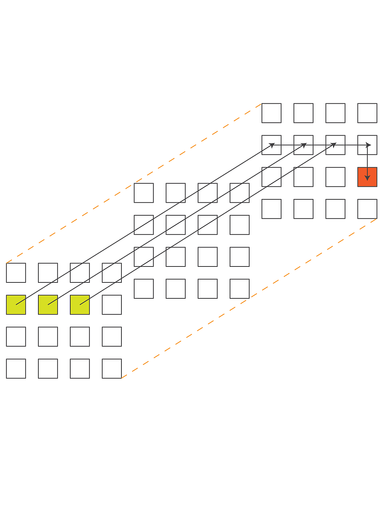
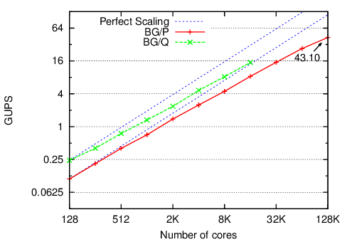

LeanMD is a molecular dynamics simulation program written in Charm++. This benchmark
simulates the behavior of atoms based on the Lennard-Jones potential, which is an effective
potential that describes the interaction between two uncharged molecules or atoms.
The computation performed in this code mimics the short-range non-bonded force calculation
in NAMD, and resembles the LJ force computation in miniMD benchmark in the Mantevo benchmark suite
maintained by Sandia National Laboratories.
The force calculation in Lennard-Jones dynamics is done within a cutoff-radius, rc for every atom.
In LeanMD, the computation is parallelized using a hybrid scheme of spatial and force decomposition.
The three-dimensional (3D) simulation space consisting of atoms is divided into cells of dimensions
that are equal to the sum of the cutoff distance, rc and a margin. In each iteration,
force calculations are done for all pairs of atoms that are within the cutoff distance. The force calculation
for a pair of cells is assigned to a different set of objects called computes. Based on the forces sent by
the computes, the cells perform the force integration and update various properties of their
atoms – acceleration, velocity and positions.
Figure: performance of LeandMD on Blue Gene/P and Blue Gene/Q Figure: fault tolerant LeandMD on Blue Gene/Q
AMR
AMR is mesh restructuring algorithm for adaptive mesh refinement computations.
The parallel mesh restructuring algorithm operates in terms of near-neighbor
communicatio among individual blocks, and a single synchronization-only collective.
Traditional AMR algorithms phrase the design in terms of processors that
contain many blocks. Instead, we promote blocks to first-class entities that
act as a virtual pro- cessor. As the mesh is refined or coarsened in AMR, the
number of blocks will change and traditional algorithms require
synchronization at these points. However, to enhance productively, we abstract
the blocks as a collection that dynamically expands and contracts over time.
Refinement decisions can then be local to each block and propagated as far as
algorithmically required so blocks are always within one refinement level of
their neighbors. Because remeshing occurs only at discrete points in the
simulation time, instead of using collective communication that is proportional
to the depth of the recursive refinement, we use a scalable termination
detection mechanism built into our runtime to globally determine when all
refinement decisions have been finalized. Previous collective methods require
O(d) rounds of collective communication, where d is the refinement and
consume O(P) memory per processor to store the results. By utilizing
termination detection, we consume a negligible amount of memory and communicate
no data. Besides termination detection, blocks execute completely
asynchronously, communicating only with neighboring blocks when required.
Traditional AMR implementations store the quad-tree instance on each
process consuming O(P) memory and taking O(log N) time for neighbor lookup.
We organize the blocks into a quad-tree but address each block by their
location in the tree using bit vectors to represent quadrants recursively.
It requires only O(#blocks/P) memory per process and O(1) lookup time. It also
frees the programmer from having to know where the block lies; instead, the
underly- ing runtime system manages the physical locations of each block and
provides direct, efficient communication between them. The runtime system can
then redistribute the blocks periodically without any change to the logic.
Figure: example simulation of a circular fluid
advected by a constant velocity field. From left to right, the figure
displays the fluid density after 2, 572, and 1022 iterations respectively.
The white squares demonstrate how the mesh is evolving over time.Figure: performance of AMR on Blue Gene/Q. Left: Timesteps per
second strong scaling on IBM BG/Q with a max depth of 15. Right: The
non-overlapped delay of remeshing in milliseconds. The
candlestick graphs the minimum and maximum values, the 5th and 95th
percentile, and the median.
Barnes-Hut
The Barnes-Hut algorithm is a tree-based scheme to compute fast and
approximate time-series solutions to the N-body problem, where Barnes-Hut
algorithm for N-body problem is a method of calculating forces on a system
of N bodies that grows only as N log N. It uses a tree-structured
hierarchical recursive subdivision of space into cubic cells. Barnes-Hut
method is widely used in cosmological simulations.
The N-body problem involves the numerical calculation of the trajectories
of N point masses (or charges) moving under the influence of a conservative
force field such as that induced by gravity (or electrical charges).
In its simplest form, the method models bodies as particles of zero
extent moving in a collision-less manner. The objective is to calculate the net
force incident on every particle at discrete time steps. These forces are then
used to update the velocity and position of each particle, leading into the next time step,
where the net force on each particle is calculated once more, etc.
In general, the force may be long-range in nature (as is the case
with gravity), so that interactions between distant particles must also
be calculated. Thus, in order to obtain a good approximation to the actual
solution of a system, O(N2) computations must be performed. Given its
quadratic complexity, the amount of work done by this all-pairs method makes it
infeasible for systems with large N.
Barnes and Hut devised a hierarchical N-body method that
performs significantly fewer computations but at the cost of a greater
relative error in the computed solution. The method relies on the spatial
partitioning of the input system of particles, thereby imposing a tree-structure on it.
Particles that are close to each other in space are grouped into closely related nodes of
the tree. This allows the approximation of forces on a particle due to a distant group
of particles through the multipole moments of that group.
Note that applying such an approximation to points relatively close to the group
will result in gross errors of calculation. In such a case, sub-partitions within
the group are tested for proximity to the point. This technique, applied systematically,
yields an expected complexity of O(N lg N), making it suitable for
large systems of particles.
Figure: Time Progression view showing 2 processors executing an
iteration of Barnes-Hut.Figure: Performance of Barnes-Hut for 10 and 50 million particle
systems on Intrepid (IBM BG/P).
Dense LU
This benchmark is the Charm++ implementation of LU solver, one of the
seven HPC Challenge benchmarks. Since Charm++ is a general and fully capable
programming paradigm, our LU implementation does not employ any
linear algebra specific notations. Our implementation is very succinct and
presents several distinct benefits.
We use a typical block-decomposed algorithm for the LU factorization
process. Our focus in this effort has been less on choosing the best possible
factorization algorithm than on demonstrating productivity with a reasonable
choice. The input matrix of n x n elements is decomposed into square blocks
of b x b elements each. We delegate underlying sequential operations to an available
high performance linear algebra library, typically a platform-specific
implementation of BLAS and perform partial pivoting for each matrix column.
Features: composable libary, flexible data placement,
block-centric control flow, separation of concerns.
Figure: weak scaling (matrix occupies 75% of memory) from 120 to 8064
processors on Jaguar (Cray XT5). Strong scaling (n = 96, 000) from 256 to
4096 processors on Intrepid (IBM BG/P).
HPPCG
HPCCG is Charm++ implementation of HPPCG mini-application in Mantevo Suite.
Solution of sparse triangular systems of linear equations is a
performance bottleneck in many methods for solving more general sparse
systems, such as many iterative methods with preconditioners. In our algorithm, the matrix
is divided into blocks of columns, where each block is analyzed to find its
independent rows for solution. In addition, if there are dense regions below the
diagonal section (we assume lower triangular for description), they are
divided into new blocks. Each diagonal block starts the computation with
its independent parts and waits for its dependency messages from the left.
Nondiagonal blocks wait for the solution values from their corresponding
diagonal block, and then start their computation.
Figure: performance of sparse triangular solver on Intrepid
(IBM BG/P) for different sparse matrices. Performance is much
better than the standard SuperLU DIST package.
1D FFT
Our implementation of Global FFT takes input size N and performs a
complex 1D FFT on an NxN matrix where subsequent rows are contiguous data
elements of a double precision complex vector. Three all-to-all transposes
are required to perform the FFT and unscramble the data. All-to-all
operations are executed via point-to-point messages and external libraries
(FFTW or ESSL) perform serial FFTs on the rows of the matrix.
Features: interoperability with MPI, adaptive overlap.
Figure: performance of Global FFT on IBM’s BG/Q BG/P.
Random Access
The HPC Challenge Random Access benchmark measures the rate of processing
updates to a distributed table. Each process issues updates to random
locations in the table. The small size of individual update messages in this
benchmark makes it prohibitively expensive to send each item as a separate
message. This makes the benchmark an ideal scenario for using TRAM, our
general purpose message aggregation library. TRAM routes messages over an
N-dimensional virtual topology comprising the PEs involved in the run. The
topology needs to be specified when creating an instance of the library. To
facilitate the specification of the virtual topology, we used the Charm++
Topology Manager library, which provides an interface to determine the network
topology for the current run. In typical cases, we found that using virtual
topologies with dimensions matching the network representation of the current
run led to good performance.
We used a Charm++ group to partition the global table across the nodes in
a run. Each element of the group allocates its part of the global
table, generates random update keys, and sends the updates to the appropriate
destination.
In the context of TRAM, each processor is limited to sending to and receiving
messages from a subset of the processors involved in the run. When determining
where to send a particular data item (in our case table update), TRAM selects
a destination from among its peers so that data items always make forward
progress toward the destination. Items traveling to the same intermediate
destination are combined into larger messages. This approach achieves improved
aggregation and lower memory utilization compared to schemes which aggregate
separately for each destination on the network.


Figure: Random access in Charm++. Left: message aggreation using TRAM. Right: performance of random access on Intrepid (IBM BG/P) and Vesta (IBM BG/Q).
EP Stream
This benchmark is a simple Charm++ implementation of the HPC Challenge
stream benchmark.